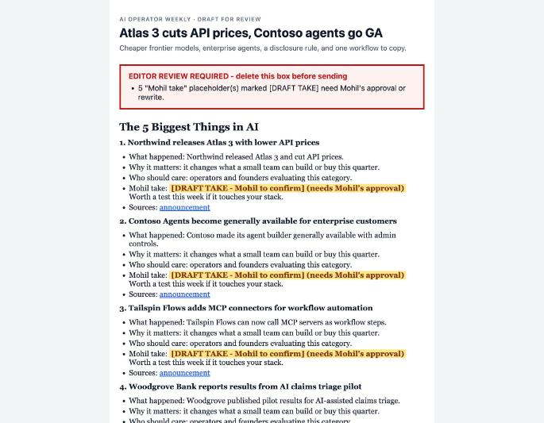
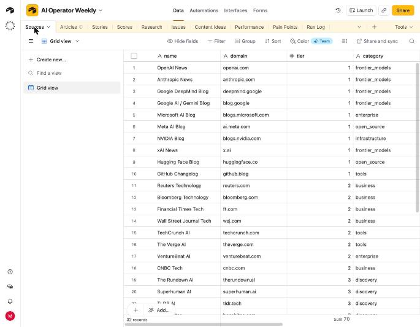
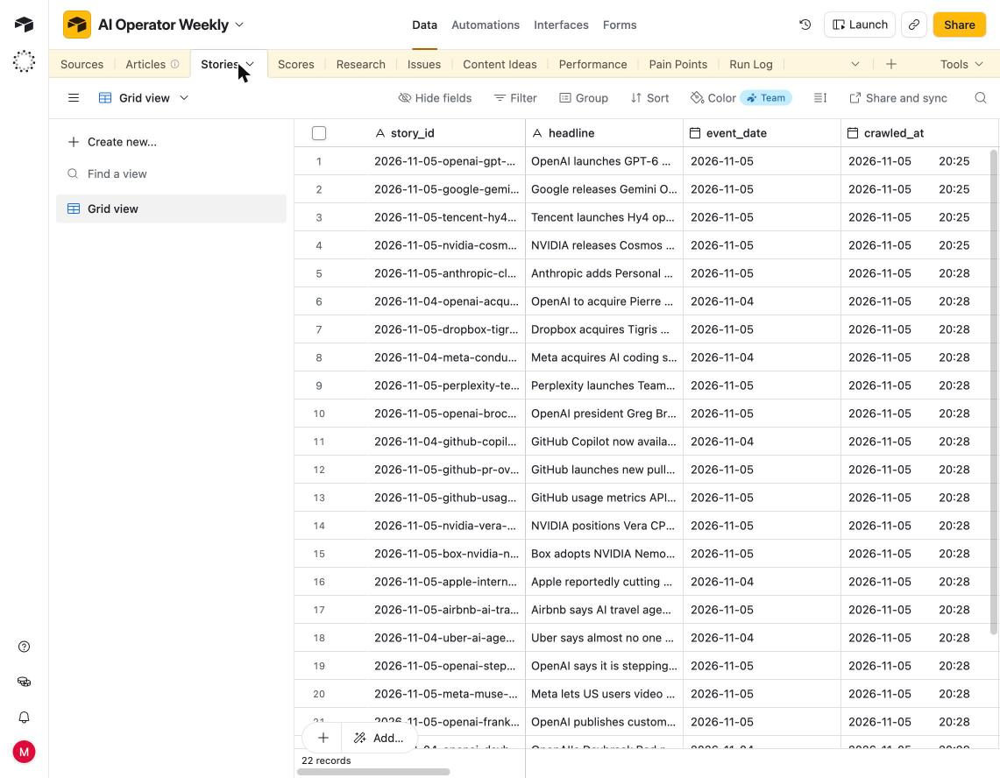
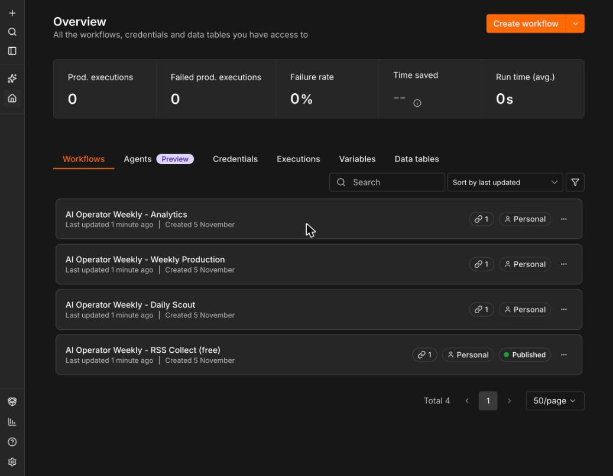
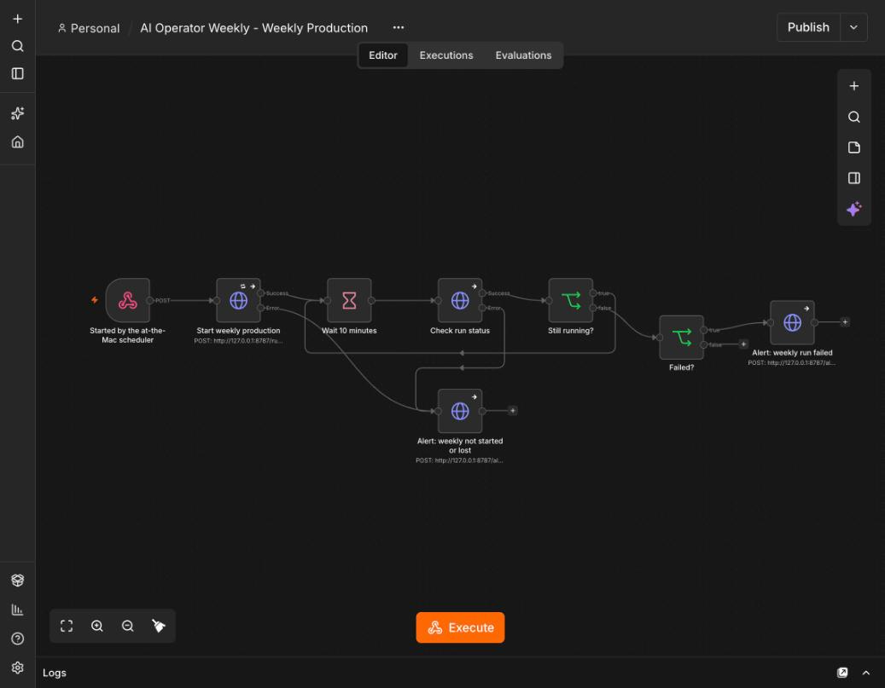

Operating manual, for Mohil and whoever helps run it · November 2026 · runs on Mohil's Mac
Not at fixed times, because a sleeping Mac would miss them. It starts the day's work once you have been using the Mac for 30 minutes in a row and no meeting is on (any microphone in use, or a Zoom meeting). Never before 6am. Each job runs once a day; the weekly issue once a week.
| Job | What it does | Cost |
|---|---|---|
| Collect | Reads the news feeds into Airtable | Free |
| Daily scout | Claude finds and scores the day's stories | ≈ $0.30 |
| Weekly issue | Research → write → fact-check → gate → beehiiv draft | ≈ $4–7 |
| Analytics | Pulls beehiiv stats for sent issues | Free |
| Maintenance (Sundays) | Backup, Airtable clean-up, log rotation | Free |
notes/<issue-date>.md with a line per story, or type them into that week's row in Airtable → Issues → mohil_notes. Without them each "Mohil take" shows as a highlighted [DRAFT TAKE] for you to fill in.out/<date>/preview.html and paste out/<date>/issue.html into a new beehiiv post (see the manual fallback doc).
A generated draft (simulated test issue). The red box lists what needs your decision; highlighted [DRAFT TAKE]s are where your opinion goes.
| To change… | Do this |
|---|---|
| News sources | Airtable → Sources. Untick active to pause one; add a row to add one (tier 1 = official vendor, 2 = good reporting, 3 = newsletters, 4 = community) |
| Your takes | notes/<date>.md or Issues → mohil_notes |
| Which sections are required, word count, banned hype words | config/newsletter.json |
| How stories are ranked | config/scoring.json (importance 30%, usefulness 25%, business value 20%, novelty 15%, audience fit 10%) |
| What Claude is told | prompts/*.md |
| Spending cap | Claude Console → Spend limits → Newsletter workspace ($25/month now) |

Airtable → Sources: the news sources and their trust tier. Edits here take effect on the next run.

Airtable → Stories: every candidate story with its date and scores. The weekly issue picks from here.
| Part | Where | Job |
|---|---|---|
| Pipeline | background service on this Mac | Does the actual work: feeds, Claude calls, gate, beehiiv draft, alerts |
| n8n | http://localhost:5678 (login in .env) | Runs each workflow, waits for the weekly issue, alerts if it fails |
| Scheduler | checks every 5 minutes | Decides when you're at the Mac and free |
| Airtable | your "AI Operator Weekly" base | The database you can see and edit |
| Claude | Console, Newsletter workspace | Scout, researcher, writer, fact-checker |
| beehiiv | your publication | Receives drafts only |

n8n: the four workflows. "Published" means switched on.

The weekly workflow: start the issue, check every 10 minutes, alert if it failed or was lost.
| You see | Means | Do |
|---|---|---|
| Draft ready for review | Issue passed every check | Review and send (section 3) |
| BLOCKED by the quality gate | A real problem: missing source, stale price, missing section | Read the listed reasons. Fix by hand, or ask for a rerun once fixed |
| Run failed | A service or Claude answer failed; the work so far is kept | Check logs/aow.log; see the manual fallback doc |
| RSS feeds failed | Half or more of the feeds are down | Usually temporary; pause bad ones in Airtable → Sources |
Alerts arrive as a Mac notification now, and by email once the Gmail app password is added.
| Do | Type |
|---|---|
| Is everything running? | ~/Operator-Weekly-AI-work/repo/deploy/mac/setup.sh --status |
| Turn the paid Claude steps ON | ~/Operator-Weekly-AI-work/repo/deploy/mac/setup.sh --paid |
| Turn them OFF (free collection only) | ~/Operator-Weekly-AI-work/repo/deploy/mac/setup.sh |
| Add or change a key/password (hidden typing) | ~/Operator-Weekly-AI-work/repo/deploy/mac/set-secrets.sh |
Live = proven against the real service. Simulated = proven with fake services in the test suite, not yet live. Not done.
| Item | Status | Evidence |
|---|---|---|
| Source registry created | Live | 32 sources in Airtable; 15/15 feeds read on Nov 5 (2 bot-blocked feeds moved to web search) |
| Airtable schema built | Live | 10 tables in Mohil's base |
| Daily Scout tested | Live | Nov 5: 18 stories saved, 0 rejected (after fixing a category bug) |
| Dedupe works | Live + tests | 0 duplicates across repeated runs; duplicate test passes |
| Scoring rubric | Live | Scores table, weights in config |
| Deep research verifies primary sources | Live | Nov 5 run dropped evidence not from vendors' own pricing pages |
| Official pricing refresh | Live + tests | Pricing research ran live; stale-price test passes |
| Writer follows locked format | Simulated | Live writer answer was lost to a parsing bug, now fixed and tested; no live rerun (spending paused) |
| Fact-checker blocks unsupported claims | Simulated | Simulated run: blocked a false claim, passed after the fix |
| beehiiv draft creation | Simulated | Waiting for beehiiv sign-in |
| No publish/confirmed path | Tests | Draft-only payloads; send endpoints refused |
| Preview/post ID saved | Simulated | Saved in simulated run |
| Analytics pull | Simulated | Live run correctly skipped (no beehiiv yet) |
| Error alerts | Live | Mac notifications + n8n failure alert fired on Nov 5; email waits for app password |
| API/search budget logging | Live | Per-run estimates; $25 cap in the Console |
| README | Done | Includes "Running on Mohil's Mac" |
| Loom walkthrough | Not done | Needs a person to record; script in docs/WALKTHROUGH.md |
| Live draft reviewed by Mohil | Not done | Needs one live weekly run + beehiiv |